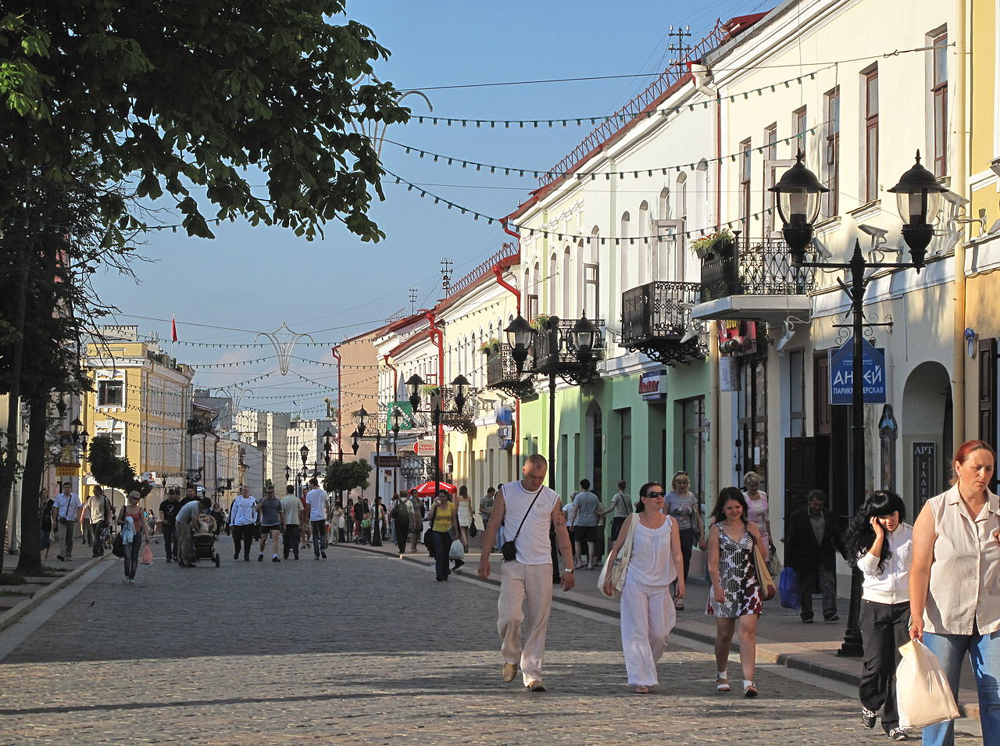
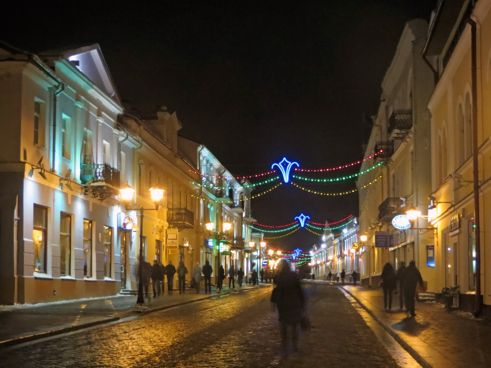

Советская улица


Улица Советская в Гродно является одной из самых старых улиц исторического
центра города. Имеет статус пешеходной улицы и автомобилям въезд сюда
строго запрещен. Советская улица в Гродно растянулась примерно на
полкилометра от Площади Советской до улицы Элизы Ожешки. Здесь
сосредоточены старинные здания, датированные XV – XVII веками. Каждое из
них можно рассматривать часами, а по пешеходной улице просто приятно
ходить, поскольку дорога, вымощенная брусчаткой, сохранилась еще с
польских времен. Во многих домах на Советской расположились кафе и
маленькие ресторанчики, где можно недорого перекусить. Много культурных и
развлекательных заведений и богатое прошлое. Пешеходная Советская улица в
Гродно ведёт свою историю с XIV века, когда она связывала Гродненский
Рынок с Виленским гостинцем – главным торговым путем ВКЛ. Называлась она
тогда Виленской, а уже к концу XV столетия была плотно застроена
деревянными и каменными домами. В XVII веке здесь возвели свой палац
Сангушки (теперь – административное здание на Советской, 1), магнаты
Сапеги подарили улице целых два дворца (один – на месте Дома профсоюзов, а
другой – на пересечении Советской и Доминиканской), а князья Массальские
обзавелись усадьбой с видом на нынешнюю улицу Ожешко. Дворцы, исполненные
в стиле барокко, стали настоящим украшением Виленской. К середине XVI века
по указу королевы Боны Сфорцы здесь возвели Костёл Святого Духа (теперь
это администрация Ленинского р-на). В начале XVII века появился
Доминиканский Костёл и Монастырь (на месте нынешнего памятника
Соколовскому). В XIX веке Виленская стала Соборной, после переименовали в
Доминиканскую, затем в Гиндербург. Здесь происходили важные события во
время восстаний в 1830-е и 1860-е годы. Стали строиться лучшие магазины и
отели: «Славянский», «Немецкий», «Коммерческий», «Петербургский»,
«Московский». А в начале ХХ века на улице открылся один из старейших
кинотеатров Беларуси – «Гродно» и многочисленные лавки фотомастеров. Во
время разрушительных войн ХХ века некоторые здания были снесены: на месте
кинотеатра «Гродно» и гостиницы «Европа» появился универмаг «Нёман», а
дворец Сапегов уступил место Дому профсоюзов. Несмотря на суровое
историческое прошлое, Советская в Гродно сохранила свою грациозность и
очарование. Сейчас – это главная улица туристического центра города, где
можно с удовольствием заглянуть в уютную кофейню на ароматное кофе,
насладиться пением уличных музыкантов, окунуться в атмосферу сувенирных
лавок и магазинов.